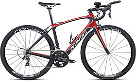
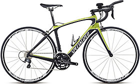
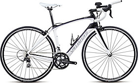

2015 Alias Pro Tri

MSRP: $6,000
The Alias Pro Tri features a FACT 10r carbon frame using women's Alias geometry and carbon lay-up, with OSBB, plus aerodynamic tube shapes for a fast, efficient ride. A Shimano Dura Ace drivetrain and Roval Rapide CL 40 wheels keep performance high and weight down.
2015 Alias Comp Tri

MSRP: $3,300
The Alias Comp Tri features a FACT 10r carbon frame using women's Alias geometry and carbon lay-up, with OSBB, plus aerodynamic tube shapes for a fast, efficient ride. A Shimano Ultegra drivetrain and Fulcrum S5 wheels keep performance high and weight down.
2015 Alias sport Tri

MSRP: $2,600
The Alias Sport Tri features a FACT 10r carbon frame using women's Alias geometry and carbon lay-up, with OSBB, plus aerodynamic tube shapes for a fast, efficient ride. A Shimano 105/Tiagra drivetrain and Axis 2.0 wheels keep performance high and weight down.